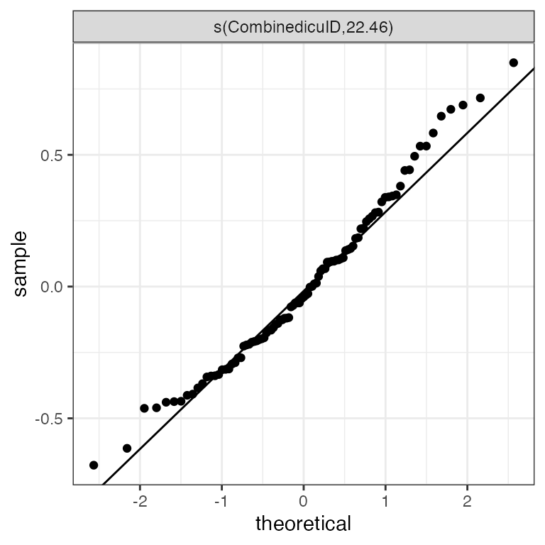

library(dplyr)
library(survival)
library(coxme)
library(pammtools)
library(mgcv)
library(ggplot2)
theme_set(theme_bw())Whenever subjects belonging to a cluster or group could have correlated outcomes, our models must account for such dependency structures. This can also be relevant in the recurrent events setting, where subjects can experience an event multiple times.
To account for the correlation, we can include random effects in the model. In the context of survival analysis such effects are called “frailty” terms.
For illustration we look at the survival of patients in the ICU. In this data set we have multiple observations from each ICU. The ICUs are identified by the CombinedicuID variable:
data("patient")
patient %>%
select(CombinedicuID, Survdays, PatientDied, ApacheIIScore) %>%
slice(1:10)## CombinedicuID Survdays PatientDied ApacheIIScore
## 1 1114 30.1 0 20
## 2 1114 30.1 0 22
## 3 1114 9.8 1 25
## 4 598 30.1 0 16
## 5 365 30.1 0 20
## 6 365 30.1 0 21
## 7 980 30.1 0 18
## 8 980 30.1 0 26
## 9 980 9.0 1 14
## 10 980 30.1 0 16To fit a PAMM with random effects we includ an s term with bs="re":
ped <- patient %>%
slice(1:300) %>%
as_ped(Surv(Survdays, PatientDied)~ApacheIIScore + CombinedicuID)
pamm_icu <- pamm(
ped_status ~ s(tend) + ApacheIIScore + s(CombinedicuID, bs = "re"),
data = ped)
summary(pamm_icu)##
## Family: poisson
## Link function: log
##
## Formula:
## ped_status ~ s(tend) + ApacheIIScore + s(CombinedicuID, bs = "re")
##
## Parametric coefficients:
## Estimate Std. Error z value Pr(>|z|)
## (Intercept) -6.05227 0.38647 -15.660 < 2e-16 ***
## ApacheIIScore 0.07746 0.01517 5.104 3.32e-07 ***
## ---
## Signif. codes: 0 '***' 0.001 '**' 0.01 '*' 0.05 '.' 0.1 ' ' 1
##
## Approximate significance of smooth terms:
## edf Ref.df Chi.sq p-value
## s(tend) 6.016 7.183 20.77 0.00487 **
## s(CombinedicuID) 22.460 96.000 31.73 0.01028 *
## ---
## Signif. codes: 0 '***' 0.001 '**' 0.01 '*' 0.05 '.' 0.1 ' ' 1
##
## R-sq.(adj) = 0.00138 Deviance explained = 12.4%
## UBRE = -0.94935 Scale est. = 1 n = 16283The pammtools package also provides a convenience function for a quantile-quantile plot of the estimated frailties to check the Gaussian assumption:
gg_re(pamm_icu)
Note that the pamm function calls mgcv::gam by default. Depending on the requirements for the random effect estimation, other mixed modeling software might be more appropriate/efficient, e.g. nlme, lme4, gamm4 or for example using function mgcv::gamm.